Self-taught builder and video director in Boise, Idaho. I use AI coding tools to take ideas from a sketch to something people actually use.
Case study · Mac app
A Mac app that swaps the background behind a person in a video, designed so a non-technical person can see and fix the AI's mistakes.
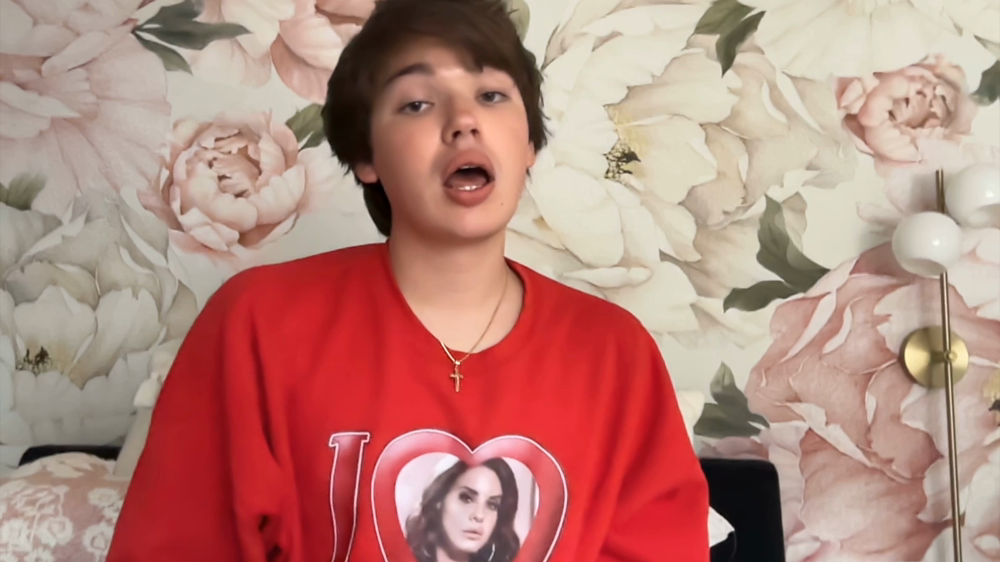
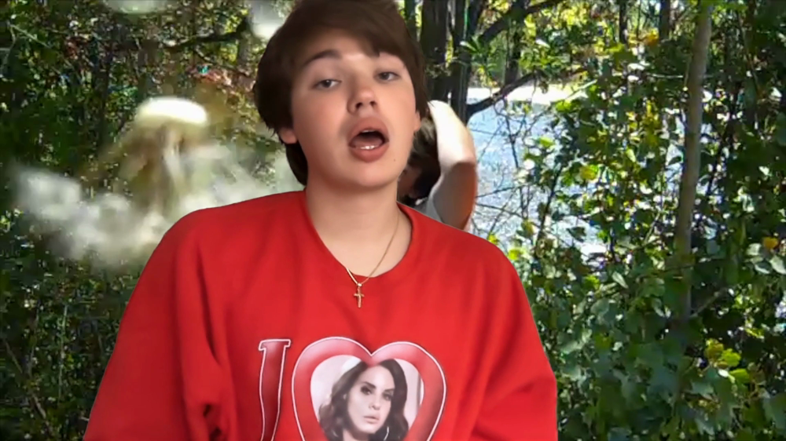
That's me, testing it out on one of my own videos.
I make music videos to songs I love, and I wanted to level up my editing. The tools that swap a background behind a person all wanted a monthly subscription, and most of them process your footage online.
I wanted something local that was mine. So I built my own: an app that runs entirely on my Mac and plugs straight into how I already edit.
The AI step is slow, so the app runs it once, then lets you review and fix the result before the final render. The final render has no AI in it, so fixing a mistake costs seconds, not another full run.
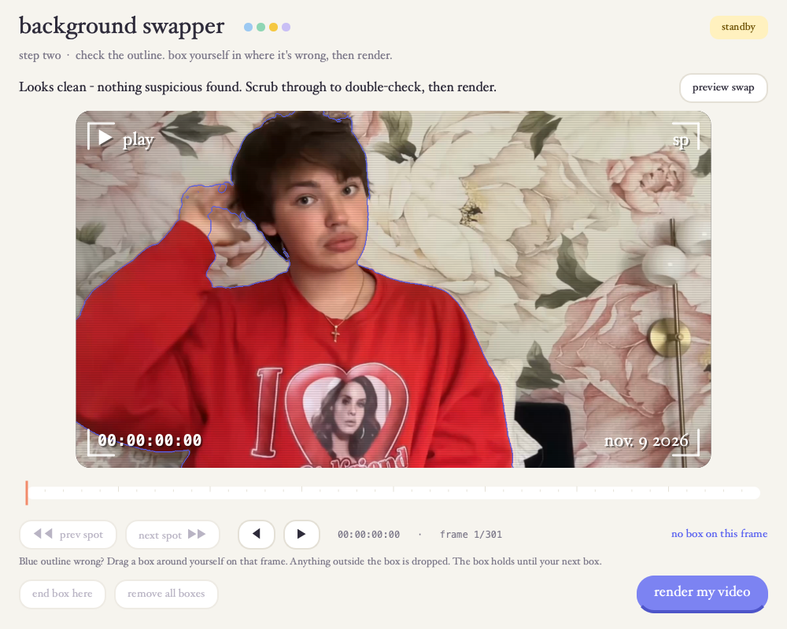
Version 1 worked, but it felt like a utility. I make videos for fun, so the tool should feel fun too. I redesigned it as a soft pastel camcorder: your clip and background are "tapes," the status light reads standby or rec, and the review screen looks like a viewfinder with a timecode and date stamp.
I went through a few rounds to get there. A dark 80s camcorder look came first, and it felt heavy instead of playful, so I dropped it. The final version keeps it gender neutral with baby blue, mint and butter yellow, and sets everything in an old-book serif with no italics so it stays easy to read.
The flow didn't change. Same three steps, same one gesture to fix a mistake. Only the feel did.
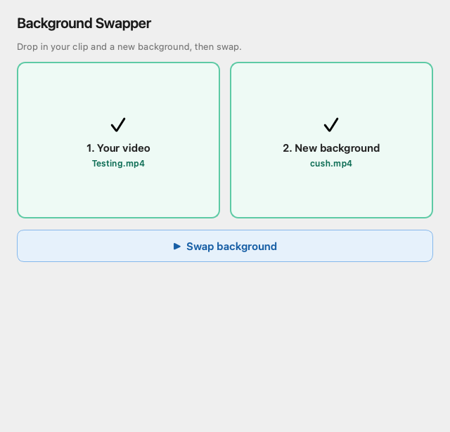
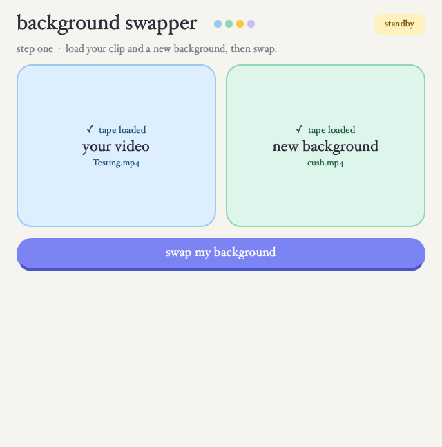
I'd turn it into a web app hosted for free on GitHub. Anyone could use it right in their browser, with nothing to install, and sharing it would be as easy as sending a link. I'd also make it lighter on memory, so it doesn't take over my computer while it works.
A one-minute clip takes about three minutes, start to finish, entirely on my Mac. No subscription and no uploads.
The AI model is Robust Video Matting, an open-source model that runs on the Mac itself. Streams frames so 4K clips render on 8 GB of RAM.
Web design
Re-themed the website of a geological and mining supply company in a hand-drawn style that matches its mule logo. The mule shows up across every section, so the whole site feels like one brand.
I gave CGS Mule a brand personality. They already had an amazing logo with a specific art style, and the mule. In the geology world, they're known for that mule.
So I took the color palette and the art style from their existing logo and themed the whole website around it.
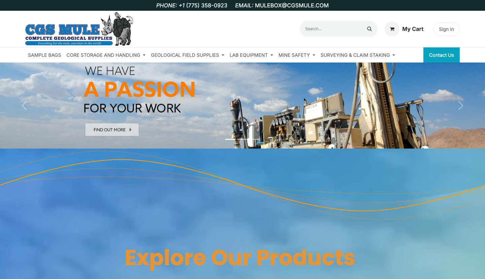
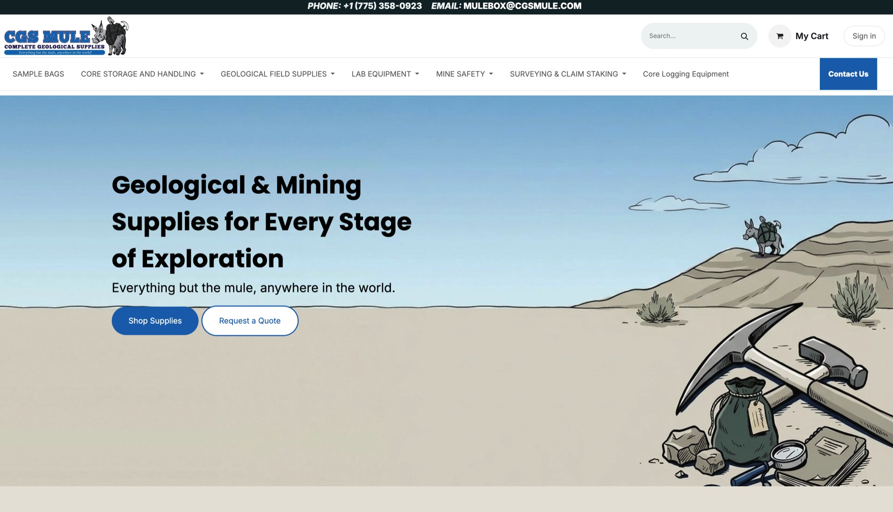
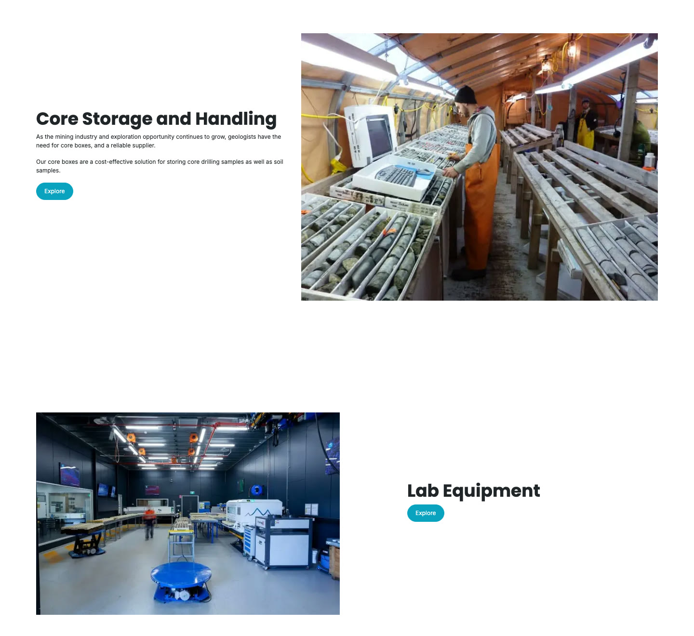
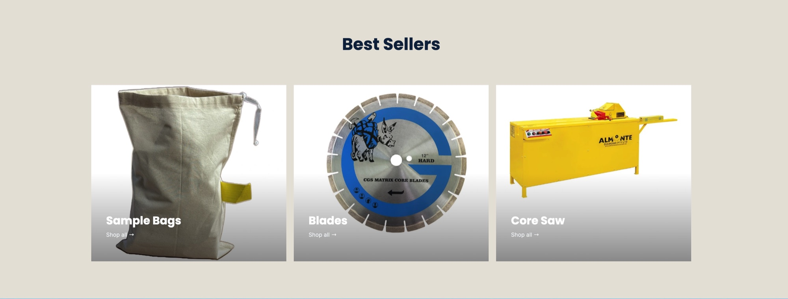
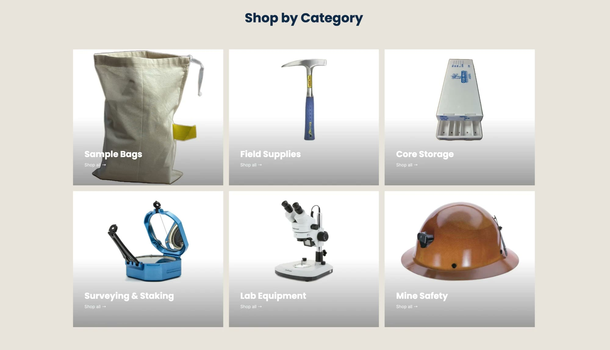
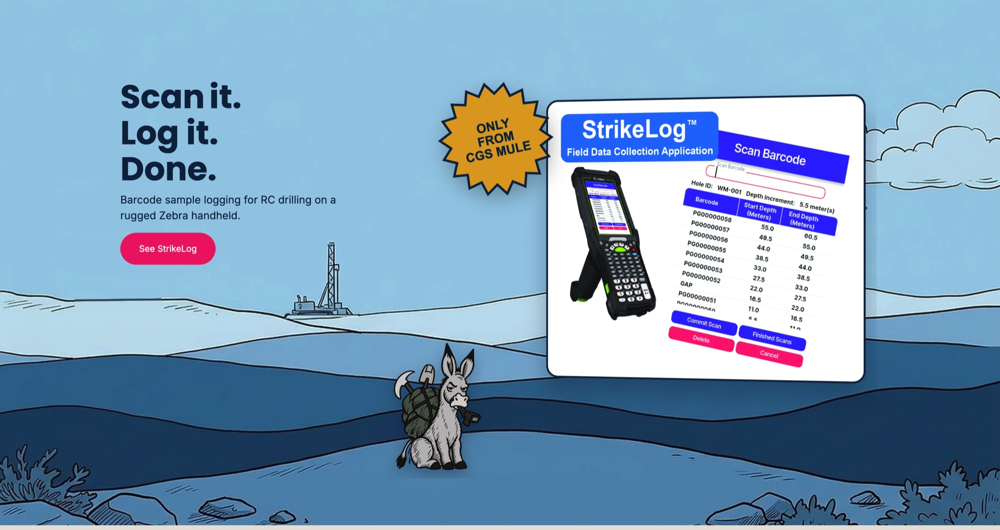
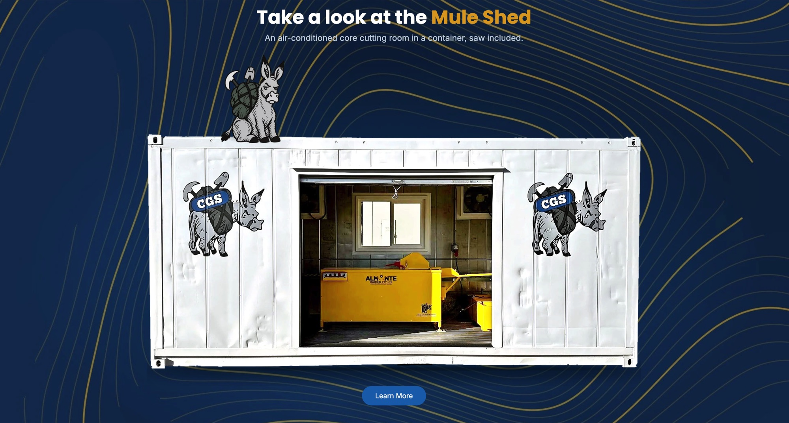
There was no CoreLift page before. I designed the whole thing. I pulled the green from CoreLift's own logo and made it the base of the hero, so their brand leads.
CGS Mule is marketing its Mule Shed right now, so I worked the shed into the same hero scene. It gives the shed more visibility without taking anything away from CoreLift.
And the mule had to be there. It's CGS Mule's mascot, so I added it right into the scene, next to the equipment.
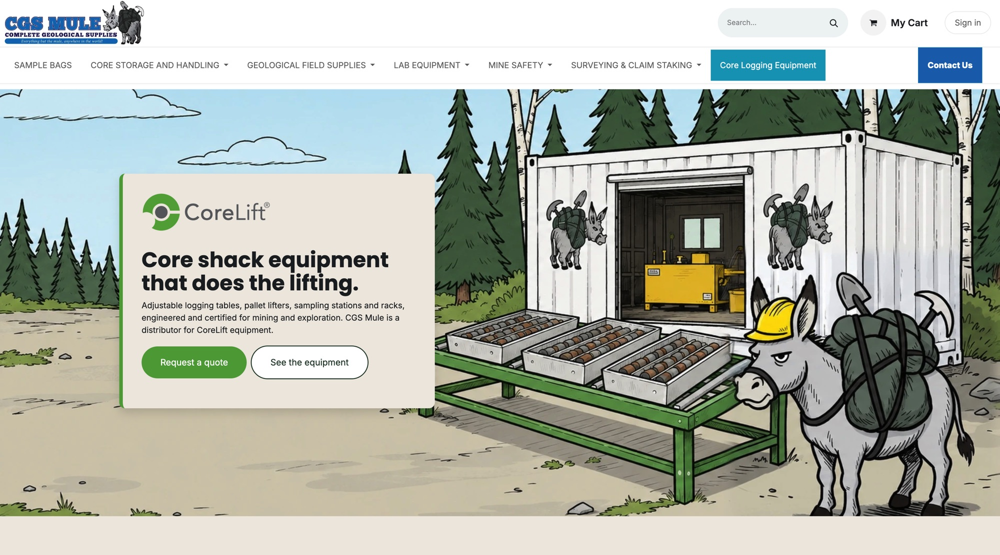
Direction
Conceived, directed and shot a music video for Caroline Manning, a singer-songwriter with 1.4 million YouTube subscribers, from concept through final footage.
I styled her outfit, directed her poses, and chose where the camera went for every shot.
Caroline wanted it to feel homey, like a girl who just woke up and is getting ready for her day. So I shot it on a vintage Flip camera, which gives everything that warm, home-video feel.